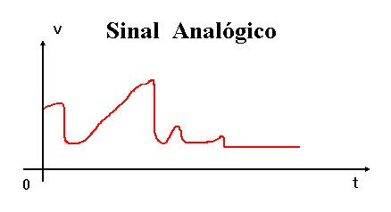
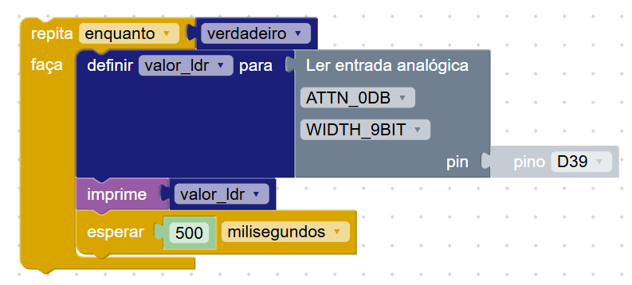

Nesta Seção
Introdução
Em projetos eletrônicos, as entradas e saídas analógicas permitem trabalhar com sinais que variam de forma contínua. Diferente dos sinais digitais que só têm dois estados (0 ou 1), os sinais analógicos podem representar uma faixa de valores, o que os torna ideais para medir grandezas como luminosidade, temperatura ou controlar intensidade de um LED.
Neste exemplo, vamos utilizar o sensor de luz LDR, que já está embutido na Amado Board, como entrada analógica. E para a saída, vamos ajustar o brilho do LED interno da placa utilizando um sinal PWM.
Esses recursos são úteis em projetos onde é necessário perceber variações do ambiente ou controlar dispositivos com mais precisão.
Entrada Analógica
Vamos fazer a leitura do sensor de luz LDR da placa ligando um jumper do terminal do LDR até o pino 39, que é uma entrada analógica.
O programa a seguir lê continuamente o valor de luminosidade captado pelo sensor e armazena esse valor em uma variável:
O que este programa faz?
- Dentro do bloco
repita enquanto verdadeiro, ele executa repetidamente as instruções. - O pino
39é lido com o comandoler entrada analógica. - O valor lido é armazenado na variável
valor_ldr. - Esse valor é impresso no console para acompanhamento em tempo real.
- Há uma pausa de 500 milissegundos antes da próxima leitura.
Visualização dos resultados
A cada variação da luminosidade ambiente, o valor da variável valor_ldr também varia. Isso pode ser observado no console da plataforma:
Quanto mais claro o ambiente, maior o valor lido. Em ambientes escuros, o valor diminui. Isso demonstra como o sinal analógico representa uma grandeza física de forma contínua.
Saída Analógica
Para controlar a intensidade de um LED, utilizamos a técnica chamada PWM (modulação por largura de pulso). Na prática, ela permite simular um sinal analógico em um pino digital.
Abaixo temos um exemplo utilizando o bloco PWM para controlar o LED azul embutido da Amado Board conectado ao pino D2:
O que este programa faz?
- O bloco
PWMé usado dentro de um laço de repetição contínuorepita enquanto verdadeiro. - Ele define o pino D2 / LED AZUL como saída com sinal PWM.
- A frequência foi configurada como
100 Hz, o que indica quantos ciclos por segundo o sinal será enviado. - O ciclo de trabalho (duty cycle) foi ajustado para
512, o que representa 50% de intensidade (em uma escala de 0 a 1023).
Alterando o valor do ciclo de trabalho, você pode controlar o brilho do LED. Valores mais baixos tornam o LED mais fraco e valores mais altos aumentam a intensidade. A frequência também pode ser ajustada para testar como diferentes taxas de oscilação afetam a suavidade da luz.
Essa abordagem é muito útil em projetos como dimmers, controle de velocidade de motores ou qualquer aplicação onde a saída precisa ser graduada em vez de apenas ligada ou desligada.